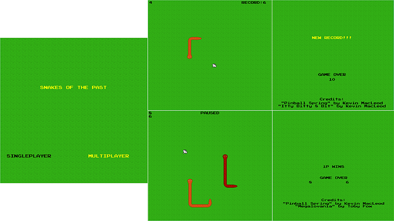
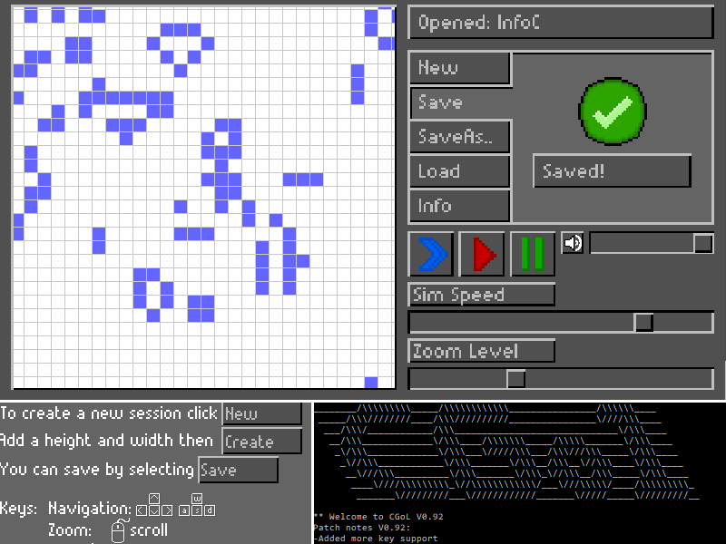

A játék lényege, hogy a kilőtt töltés eljusson a célba. A legtöbb esetekben ez csak úgy lehetséges, ha kihasználjuk a pályán található többi töltés vonzási vagy taszítási tulajdonságát de számolnunk kell azzal is , hogy a töltés a falakról lepattan. A pályák különböző nehézségűek, haladni csak sorrendben lehet. Próbálkozni akárhányszor lehet, de a megszerezhető pontszám így egyre csökken.
A játékom hőse Sara, aki egy mágikus farkas városába téved. Itt arra kérik az ittélők, védje meg őket Sara a sárkánytól. Ez azonban nem egyszerű küldetés, a sárkányt nem lehet legyőzni akármilyen karddal. A kovács szívesen kovácsol nekünk megfelelő kardot 10 aranyért cserébe. De vajon honnan szerezzünk 10 aranyat? Szerezzük meg az aranyalmát és vigyük el a boltosnak, vele talán tudunk üzletelni, hogy aztán megszerezzük a kardot. Azonban a sárkánnyal is vigyázni kell, nem fogja hagyni magát könnyen legyőzni.
A klasszikus, jól ismert TV-s játék C-ben megírt verziója. A konzolos megjelenítés lehető legtöbb lehetőségét felhasználva a c_econio segítségével. Irányítás és navigáció a nyilak, enter, tab és az escape nyomogatásával. Folyamatosan frissülő nyereménytáblával, top 10-es listával és grafikus segítségekkel. Az egyetlen hiányzó feature, hogy nem utalja át nyereményünket a számlánkra. :(
A nagy házim a közismert Tetris elkészítése volt. Célom a játék funkció közül minél többnek a beépítése volt a programomba, így a játékosnak a mozgatáson kívül lehetősége van félretenni blokkot és láthatja azt is, melyek a sorban a következők. A programhoz SDL-ben készítettem grafikai felületeket, ahol a felhasználó szövegbeviteli mezőkben és kattintásokkal tudja megváltoztatni az alapértelmezéseket, valamint az aktuális játék paramétereit, és általában is így tud navigálni a programban.
A programom a közismert aknakereső játékot valósítja meg. Igyekeztem minél pontosabban lemásolni sokunk gyerekkorának egyik kedvenc játékát a nosztalgikus élmény érdekében. A program az SDL2 grafikus könyvtár felhasználásával készült. A pályaméret és a bombák számának megváltoztatása mellett lehetőség van bármikor elmenteni és visszatölteni egy játékmenetet.
A program egy algoritmust vizualizál, ami egy hangya mozgását modellezi, mégpedig a hangya jelenlegi pozíciójának színe alapján, a hangyát elforgatja, előre lépteti, majd az előző helyen lévő színt a sorban a következőre cseréli, az utasításkészlet szerint (https://en.wikipedia.org/wiki/Langton%27s_ant). A példán az LR és az RLLR utasításkészletek láthatóak.

A Hexxagon egy dámához hasonló társasjáték, hatszögletű pályán. A soron lévő játékos lerakhat egy új bábut egy szomszédos mezőre, vagy elugorhat kétmezőnyit egy már meglévővel. Az új bábuval szomszédos ellenfelek színt váltanak. A cél: a pálya megteltekor létszámfölényben lenni, vagy még azelőtt az ellenfelet teljesen megsemmisíteni. A program felkínálja az adott koronggal végrehajtható lépéseket, az ugrást zölddel, a duplikálást sárgával.
Választható a hagyományos kétjátékos mód, valamint két gépi ellenfél is. Közös bennük, hogy gondosan számba veszik a lehetőségeket, de míg az egyikük mindig az ellenfélnek legtöbb kárt okozó lépést választja, addig a másik egy összefüggő terület kialakítására törekszik, amin nehéz fogást találni. A játék kilépésnél automatikusan ment, a főmenü Folytatás gombjával bármikor folytatható.
A játékom a méltán híres slither.io, zatacka, valamint snake játékok különleges keveréke SDL grafikát használva. Single Player módban inkább az eredeti snake játékra hasonlít, Multi Player módban a slither.io szabályai szerint működik, míg az irányítás minden módban a zatacka rendszerét imitálja.
Leírás: Ez az adatbáziskezelő egy offline közösségi oldal. Lehetősége van a felhasználónak egy jelszóval védett profilt létrehozni, üzeneteket küldeni más felhasználónak, barátnak jelölni őket. Keresést tud indítani a felhasználók között, végül kijelentkezéskor lehetőséget adni más felhasználónak a bejelentkezéshez.
A program egyenletekkel és koordinátákkal megadott síkgeometriai alakzatokat jelenít meg. Ezen kívül lehet vele különböző szerkesztési lépéseket végezni, például adott pontban merőlegest állítani, körhöz érintőt húzni, metszéspontok és érintési pontok helyeit kiszámítani. Használhatjuk segítségként koordinátageometriai problémák megoldásakor, vagy egyszerűen érdekes ábrák, mintázatok létrehozására.
A Hexxagon egy hatszögekre osztott pályán játszott játék, melynek célja, hogy a játszma végén több bábunk legyen, mint az ellenfélnek. A győzelem kulcsa, hogy a saját bábunkkal az ellenfél bábuja mellé lépve elfoglaljuk azt, tehát saját színünkre változtatjuk. Kezdetben csak néhány bábu áll rendelkezésünkre. A játékosok kétféleképpen léphetnek. Vagy a szomszédos mezőre lépnek (ezzel a lépéssel egyel növelik a bábuk számát), vagy pedig kettővel arrébb lépnek (ezzel a lépéssel csak áthelyezik a bábut). A játék véget ér, ha valamelyik játékos nem tud lépni.
A projektem egy 2d-s kalandjáték engine készítése volt. A kirajzoláshoz csak az SDL beépített függvényeit használtam. Három minta pálya is készült hozzá. Minden adatot saját szöveges fájlból olvas be. Gitlab: https://gitlab.com/GD-SouceMakers/relicengine-group/relicengine.
A program a jól ismert aknakereső játékot valósítja meg. A menüben lehetőség van a 3 szokásos nehézség egyikét választani, vagy egyéni pályát létrehozni (a pálya szélességének, magasságának és az aknák számának megadásával), illetve a legutoljára elmentett játékot is lehet folytatni. A felfedetlen mezőket színátmenetesre állítottam, hogy feldobja az eredeti amőba szürke hangulatát.
A programom egy olyan játék, amelyben egy karaktert irányítva dobozokat kell tologatnunk azok megfelelő helyeire. Egy pályával akkor vagyunk készen, ha minden dobozt a helyére toltunk. A játék több, egymás után nehezedő pályából áll. A program a dicsőséglista és a lépésszám kiírására a konzolos felületet használja.
A játékom egy egyszerű 1v1 box mérkőzést szimulál. Lényege, hogy lecsökkentsük ellenfelünk élet pontjait nullára, ami itt a K.O.-t jelenti. Egy menet három perc elteltével ér véget, ha addig nem történt K.O., az a játékos nyer, aki a legtöbb sebzést vitte be a játék során. Az élet pontok folyamatosan töltődnek vissza, így semennyire sem biztos, hogy egy menet K.O.-val ér véget. Egyetlen, player vs player játékmód létezik.
A játék lényege, hogy a kígyó megegye a pályán véletlenszerűen elhelyezett étket. Egy étek elfogyasztásával a kígyó mérete nő. A cél hogy minél több pontot, étket szerezzünk. Kiskoromban sokat játszottam ezzel a játékkal, ezért is választottam ezt nagy házinak. Nagyon jó volt ezen a játékon dolgozni nagyon élveztem és hala Istennek időben elkészültem. Még soha nem játszottam Snake-et kétjátékos módban, és hála Istennek úgy próbálhattam ki, hogy én csinálhattam meg.
Házi feladatként egy aknakereső játékot készítettem el az SDL2 grafikus könyvtár segítségével. A játék lényege, hogy a játékos felderítsen minden mezőt anélkül, hogy aknára lépne. Ha ez sikerül, akkor nehézségi szinttől függően a játékos időeredménye névvel együtt elmentésre kerül, így a legügyesebbek a ranglista tetején bármikor viszont láthatják magukat. (Természetesen a GDPR miatt a program nem ellenőrzi, hogy a felhasználó valódi nevet adott-e meg, így mindenki személyazonossága titokban maradhat a többi felhasználó előtt.)
Üdv, erre tévedt olvasó! Ez a játék maga a megtestesült gonosz. Egy fiktív egyetem, fiktív kezdő hallgatóját testesíted meg és egyetlen küldetésed bent maradni az egyetemen, ami korántsem egyszerű feladat. Hiszen az egyetem vezetője Professor Parallel kedvenc elfoglaltsága eltanácsolni a hallgatókat, ha sapkájuk azért, ha nem akkor azért. A játékban négy alapérték van: Energia, Kedv, Osztályzat és a Nap. Az első három folyamatosan változik minden kártyával és ha bármelyik 10 vagy 0 értéket ér el, akkor kedvenc professzorunk fogad minket egy szép eltanácsoló üzenettel. A játékot kattintással is tudod irányítani. Töltsétek le az alábbi linken ha van kedvetek: https://drive.google.com/open?id=1J5_QtGEcixbXYTl44KE0O7uftYiKwWak.
A játékban egy inváziót próbálunk minél tovább túlélni, amikor is az ablak közepén elhelyezkedő bázist kell megvédeni a pálya szélei felől beáramló apró, piros baktériumoktól. Ezt úgy tehetjük meg, hogy egész egyszerűen egérrel köréjük rajzolunk egy-egy zárt kört (krumplit). A krumpli megmarad, a baktérium viszont meghal és pontot ad. A húzható vonalnak persze van egy maximális hossza. Rajzolás közben nem érhetünk már lent lévő krumplihoz, sem a bázishoz, és mindenképp kell baktériumnak lenni (akár többnek is) az alakzatban, hogy megmaradjon. Ezek után, amint egy baktérium nekiütközik, apró területen lakmározik a krumpliból, de eltűnik. Ilyenkor nem ad pontot. Ha legalább három baktérium bejut a bázisra, az a játék – és egyben az emberiség – végét jelenti.
Én nagy házinak egy Sokoban játékot készítettem, ami az egyszerűség kedvéért a konzol ablakban fut. Egyszerű színezéssel igyekeztem átláthatóvá tenni a jelekből felépített pályát, ahol a zöld x a karakter, piros egyenlőségjelek a dobozok, és kék körök a célok. A játék érdekessége, hogy az egyszerű szabályok ellenére különösen nehéz pályákat lehet benne találni, és egy dobozeltolás visszavonására nincs lehetőség. Vajon ebből az állásból még megnyerhető a játék? És ha igen, mennyi lépésből?
A program John Conway által kitalált életjátékot képes szimulálni grafikus megjelenítéssel. Nagyobb pályák esetén lehetőségünk van közelítésre és távolításra, illetve a nézet mozgatására. A menügombok segítségével szabadon irányíthatjuk a szimuláció menetét, és elmenthetjük az élettér állapotát, amit aztán később újra betölthetünk.

Az általam készített program egy kezdetleges GPS útvonaltervező. Képes egy térkép szöveges reprezentációját fájlból beolvasni és az ebből felépített adatstruktúra alapján két megadott helyszín között útvonalat tervezni. Meg lehet adni az útvonaltervezés szempontjait is. Kereshetünk legrövidebb, leggyorsabb útvonalat, megadhatjuk, hogy a tervezés során a program kerülje el a fizetős utakat, illetve meghatározhatunk köztes állomásokat is, melyeket feltétlenül érintenie kell az algoritmusnak.
Házi feladatként egy olyan könyvtárat készítettem, ami segítségével könnyedén írhatunk neurális hálókat C-ben. A könyvtár segítségével nagyon sok gépi tanulási problémát megoldhatunk, a segédfüggvények elvégzik a „piszkos munkát” helyettünk. Az alábbi képen például két külön osztályba tartozó arkhimédeszi spirál látható, valamint halványabb színekkel az, hogy a neuronháló miként tanulta meg osztályozni a két csoportot. Egy példaprogramban azt is sikerült megtanulnia, hogy megadott adatok alapján ki élte volna túl a Titanicon való utazást. Részletesebb leírás és a teljes projekt példákkal: https://github.com/Imetomi/TinY-ANN.

A program a közismert GeoGebrához hasonlóan különböző alakzatok megjelenítésére használható. Képes tetszőlegesen sok alakzat megjelenítésére, ezek egy általunk elnevezett fájlba mentésére, visszatöltésére. Az alakzatok neve mellett megjelenik területük, kerületük is, illetve kérhetünk képernyőképet munkánkról.
A feladatban szerepelt, hogy a felhasználó tudjon egy járatra jegyet foglalni, illetve, ha a felhasználó dolgozó, akkor tudja lekérdezni a járat adatait, foglalt üléseket. A dolgozó számára egyszerűbb, ha grafikusan látja a foglalt üléseket és nem egy adathalmazként. Itt is ezt láthatjuk, hogy a HA1224 (12.24) járat mely ülései vannak lefoglalva. A járat desztinációja Karácsony, mert amikor a járat már visszafele jön már hozza az ünnepet és remélhetőleg a fehér havat is.
A program egy kezdetleges grafikus játék SDL-lel készítve. Lényege a sárga részecske eljuttatása a piros mezőbe, amit különböző részecskék lerakásával érhetünk el. A pályák sikeres elvégzésével a játékos bekerülhet a dicsőséglistába pontszámával, azonban óvatosan kell bánni a lerakott töltésekkel, mert ha sokat rakunk le, elérhetünk negatív pontot is!
Ez a klasszikus aknakereső játék SDL-es verziója. Színvilága az éjszakai baglyokra van megtervezve és így a szemet kíméli. Választható nehézségi szintek, beállítható pályaméret és aknaszámok. Eltelt időt és a fennmaradó aknák számát mutatja. Ennek a programnak nem okoz gondot akár tíz játékállás tárolása és betöltése sem! A ranglisták tárolásáról már nem is beszélve!
A nagy házimban az 1991 Pipe Dream Windows 3 verziójához hasonló játékot készítettem. A játékos célja, hogy az 'S' jeltől induló folyadék minél tovább a csövekben maradjon. Ehhez egy csőrendszert kell építenie a baloldalon megjelenő elemekből. Ha a folyadék kijut a csövekből az első sávon jelzett idő lejárta előtt, a játékos veszít.
Az általam írt farmos játékban a felhasználó egy kellemes barátságos környezetben találja magát. A játékban egy karakterrel lehet a farmon mozogni és ezzel a karakterrel lehet boltba menni, elültetni az ott beszerzett magokat. A telken elültetett növényünket csak kitartóan locsolgatni kell. Egy kis várakozás után máris arathatunk és eladhatjuk a terméket, hogy ezután újabb magokat vásároljunk. A játékban hétféle növény közül lehet válogatni. Mindegyik más-más kinézettel, vásárlási és eladási értékkel és beérési idővel rendelkezik.
A programom, ksh (azaz kissbeni's shell) egy bash kompatibilis UNIX shell, ebbe beletartozik a parancsok futtatása, parancsok közötti adatátvitel (pipe-olás), parancsok kimenetének file-ba mentése és hozzáfűzése, aliasok létrehozása, lokális és globális változók kezelése, illetve parancsok szerkesztésére és előző parancsok közötti navigálás is. Lehetőség van akár rendszer shellként használni, mivel támogatja a -c opciót. A program elérhető a https://gitlab.com/kissbeni/ksh címen.
Biztos ismerős első ránézésre is ez a furcsa nevű játék, amelyet legjobban az 1986-ban kiadott „Arkanoid” nevű játék ihlette. A játék nem bonyolultabb annál, mint aminek tűnik első ránézésre, a játékos feladata a pontok gyűjtése a pálya rombolásával. A retró stílus célja, hogy a lehető legjobban visszaadja azt a hatást, amit ezek a régi klasszikusok nyújtottak a videojátékok szerelmeseinek. Csak nehogy leejtsd a labdát a földre! Nincs annyi életed, hogy nagyon sokszor megtehesd!
A játék a televíziós kvízműsort valósítja meg hasonló játékszabályokkal, egyszer használatos segítségekkel. Ennek során választhatjuk a közönség szavazatát, vagy felezhetünk a helyes válasz megtartásával. Mindeközben a kérdések egyre nehezednek, az esetlegesen megnyerhető összeg pedig egyre nő. A cél az összes kérdés helyes megválaszolása, ezzel a fődíj megnyerése.
Ez a program a Conway-féle sejtautomata működését bemutató szimuláció. Egy megadott kezdőértékből generációnként előállítja a következő sejttérképeket. A szimuláció beállításai változtathatók, így nem csak az alapkoncepciót tudjuk kipróbálni, hanem magunk által adott paraméterekkel is tesztelhetjük a működést. Az állapotokat lementhetjük fájlba is, így később is újra tudjuk használni azokat.
A játékom egy egyszerű farmos játék, a játékos választhat termőterület méretet, ezt követően megművelheti a választott földterületet és három növény közül választhat amit ültethet rá (paprika, répa, bab) ezek idő elteltével nőnek (csak miközben meg van nyitva játék) és a játékos végső állapotban betakaríthatja őket. A program számolja a betakarított növények mennyiségét. A játékban nincs cél amit el kell érni, a játékos addig folytatja a gazdálkodást amíg kedve van és elmentheti a játéka állapotát.
Egy Xwing űrhajót irányítva megharcolhatunk a Birodalom flottájával: TIE fighter-ekkel és csillagrombolókkal. A harc közben használhatunk robbanós tölteteket, ami egyszerre több ellenséget is felrobbant, vagy segítségül hívhatjuk Yoda mestert, aki lelassítja az időt nekünk. A játék célja, hogy minél több ellenséget lelőjünk, ha elég jók vagyunk, felkerülünk a TOP 10-es ranglistára.
Az ismert windowsos alapjátékot készítettem el, az aknakeresőt. Bár a cellák kinézete saját, azonban próbáltam úgy elkészíteni őket, hogy hasonlítsanak az alapra. A pálya szélességét és magasságát te adod meg, azonban az eredményt csak megfelelő mennyiségű aknával menti le. A játék célja, hogy minél rövidebb idő alatt megtaláld az összes aknát, azok elkerülésével.

A nagy házim egy amőba játék. Két módban is lehet játszani. Van egy „Player vs. Player” lehetőség, illetve egy „Player vs. AI”. Kezdetben meg kell adni a pálya méretét, majd a játékmódot és már játszhatunk is. A programom képes a játék elmentésére és visszatöltésére is, továbbá mérettől függően nő és csökken a pályákon megjelenő négyzet X és O. Az AI számos védekezési és támadási stratégiát is tud.

Az én programom egy könyvtárat valósít meg, mely képes könyvek adatait - címét, szerzőjét, kiadásának évét illetve műfaját - eltárolni rekordokban. Lehet új bejegyzést létrehozni, meglévőt módosítani vagy törölni, illetve cím, szerző, kiadási év vagy műfaj alapján keresni. Az egész adatbázis egy txt fájlba kerül mentésre, ahányszor csak módosul tartalma.
A játék lényege, hogy a felhasználó jobb egérkattintások által felfedje minden olyan mező értékét, mely nem tartalmaz aknát. Ekkor nyert. Bal egérgombbal megjelölheti azokat a mezőket, melyek szerinte aknát tartalmazhatnak. Ha a felhasználó aknára kattint, vesztett, ekkor az egész pálya felderítődik. Az aknák feketék, a többi mező fehér, bennük látszik a szám, mely jelzi, hogy hány aknával szomszédosok közvetlenül. A megjelölést pirossal mutatja a program. Alul látható az időzítő; alatta, hogy hány akna van a pályán. Választható, hogy egyéni vagy alapbeállításokkal játsszunk. Ha alapbeállításokkal, akkor felkerülhetünk a dicsőséglistára, ha a tíz leggyorsabban teljesítő között végzünk. Ha egyéni beállításokkal, akkor számos lehetőség van. A pályaméret, az aknák száma állítható. Lehet játszani időlimittel vagy anélkül.
A jó öreg Snake játékot írtam meg grafikusan SDL segítségével C nyelven. A bébikígyó menüje egyszerűen működik, csupán csak azt kell kiválasztanunk, hogy egy, vagy két játékos szeretne-e játszani. Máris megjelenik ettől függően egy vagy két bébikígyó, akik almák megevésével hatalmasra nőhetnek. A játék számolja a pontokat és ha sikerül rekordot döntenünk, akkor azt elmenti a következő játékra is. A játék végén egy dokumentációt készít, ahol megnézhetjük, hogy az utolsó játék menete hogyan zajlott, hány ponttal és ki nyert. A szabályok ugyanazok, mint az eredetiben, annyi kivétellel, hogy a kígyók összeütközése helyett csak akkor halhatunk meg, ha a képernyőnek vagy saját magunknak ütközünk. A grafikát én terveztem, és valósítottam meg.
A játék során a folyamatosan és egyre gyorsabban érkező tetromino-kat kell elhelyeznünk a pályán, arra ügyelve, hogy ne teljen meg velük a pálya, melyet az által érhetünk el, hogy egy-egy sort teljesen kitöltünk, ugyanis ekkor eltűnik az adott sor. A játék képes tarsolyban tárolni egy tetromino-t, ranglistát nyilvántartani, megfelelő statisztikák megjelenítésére, pályaméret változtatására és még a szint növekedése során való játék nehezítésére is.
A FarmVIK játékban négyféle növényt ültethetünk: babot, répát, paprikát és krumplit. A különböző növények különböző ütemben nőnek, és a lassabban növekedő zöldségek több pontot érnek. Ha nincs elég földünk, akkor bármikor felvehetünk új földet, és ha túl sok földünk lenne, akkor le is törölhetjük bármelyik földünket. A kertünket pedig úgy rendezghetjük, ahogy csak akarjuk, a földjeinket áttehetjük bárhova. Nem is kell a gép előtt ülnünk, ahhoz, hogy a növényeink megérjenek, mert még ha nem is vagyunk bejelentkezve, a játékban automatikusan frissül a növények állapota az eltelt idő függvényében!

A játékban egy űrhajó pilótafülkéjében ülünk. Célunk, hogy az iránygombokat használva (balra, jobbra, fel, le) minél tovább túléljük a felénk repülő aszteroidákat és aknákat. A játék SDL2-es grafikával készült csak 2D-s elemeket felhasználva, de az űrben keringő tárgyak mérete és pozíciója úgy változik, hogy azok a tér mélységének érzetét keltsék. A játék 100 pontonként nehezedik: egyre több objektum jelenik meg és egyre gyakoribbak lesznek az aknák melyek többet sebeznek. A pontszámunkat a játékban megtett táv alapján kapjuk, mely egy 10-es ranglistába kerül mentésre a nevünkkel együtt. Az űrhajó pilótafülkéjének képét a Star Wars: X-wing nevű játékból vágtam ki, az objektumok általam módosított képfájljait pedig Aleksander Kowalczyk (Retrocade.net) készítette.
A program a jól ismert klasszikus aknakeresőt valósítja meg. A játékos célja, hogy minél hamarabb felderítse az összes aknamentes mezőt. A program egy abszolút toplistát is vezet, ahová a három legtöbb pontot elért játékos kerül fel. A pontrendszer figyelembe veszi az egy mezőre jutó aknák számát és természetesen a nyeréshez szükséges időt is.
A klasszikus Snake játék. Egy- és kétjátékos móddal, valamint kilépéskor menti az aktuális állapotot, indításkor ki lehet választani, hogy új játékot kezdünk vagy az előzőt folytatjuk, ha van mentett. A pálya végtelenített, tehát a szemközti falak szomszédos mezőket határolnak. Egy pont begyűjtése után a kígyónk színt vált.
A játék nagyban hasonlít az eredeti Pac-Man játékra, viszont a szörnyek megevésén kívül a jégkása megevésével le is fagyaszthatjuk őket. Az eredeti játék vizuális hangulata helyett próbáltam színesebbre törekedni, így lett a meggyből csili, és egy szerelemes virág is az ellenfeleink táborát erősíti. A játékban választhatunk nehézségi szintet és pályát (amit a program .txt fájlból olvas be így akár magunk is készíthetünk egyet). A játék rendelkezik többszemélyes móddal is, így akár ketten is menekülhetünk a virág elől.
A FarmPro2k18 egy egyedülálló farmszimulációs játék, melynek segítségével akárki sikeres farmernek érezheti magát. A játék valós idő alapján működik, szóval nem muszáj 0-24 a gép előtt ülni, a játékos akár kikapcsolt eszköz mellett is gyarapíthatja vagyonát. Azonban vigyázni kell, ha valamit nem takarítunk be időben, akkor el is gazosodhat. Az alkotás színvonalát növelik a sajátos és színvonalas grafikai vonások, melyek szintúgy a készítőtől származnak.
A kígyós játék lényege, hogy a játékos által irányított kígyó megegye a véletlenszerűen lehelyezett étket, és ezáltal a kígyója megnőjön. Kígyós játékot 1 vagy két játékos játszhat egyszerre. Egyjátékos módban, ha a játékos kígyója megdöntötte a rekord méretet, a játék elmenti azt. Kétjátékos módban a pontozás csak tájékoztató jellegű, az a játékos veszít, akinek a kígyója beleütközik a másik kígyójába. A játék megállítható (pause), hogy később a kígyózást ugyanott tudjuk folytatni.
Conway's Game of Life (CGoL) szabályait szimuláló kis program. A jobb felhasználói élményért csináltam hozzá egy grafikus kezelő felületet és van háttér zenéje is. A programmal lehet tetszőleges nagyságú játékteret kreálni, ezeket menteni és betölteni. A cellák értékét folyamatos rajzolással is lehet módosítani, akár szimuláció közben.
Ez egy klasszikus négyszemélyes társasjáték. A játékosok négy bábuval rendelkeznek, amelyeket kockadobásokkal juttathatnak be a célba. A játéknak akkor van vége, ha az egyik játékos mind a négy bábuja már a célban van, a csavar a játékban az, hogy amíg a nem színezett mezőkön tartózkodik egy bábu, addig bárki leütheti, ha éppen arra a mezőre lép.
A játék célja a pályán található zombik irtása anélkül hogy elvesztenénk egyetlen életünket. Minél több zombit sikerül megölni annál több pontra tehetünk szert, így esélyünk nyílik felkerülni a legjobb 10 játékos nevét és pontszámát tartalmazó toplistára. A játékos ládákban találhat új, jobb fegyvereket, extra életerőt illetve kitartást (stamina). Karakterünk mozgását a WASD gombokkal illetve a nyilakkal lehet irányítani, ládákat nyitni illetve ütni pedig a szóköz billentyű lenyomásával lehet.

A játékot a Rizikó és hozzá hasonló térkép elfoglalós játékok ihlették, célja szintén ez. A játékosok egy turn-based rendszerben mozgatják a saját katonáikat, újakat képeznek ki, és megütköznek az ellenséggel ha az ellenség területére lépnek. A harcot nem a nagyobb sereg nyeri, hanem az, amelyiknek a szimulált kockadobásai jobbak. Mind a térkép felépítése, mind a játékosok külső fájlból beolvasottak, így csak a fantázia szab határt, milyen témájú játékot szeretnénk játszani és hányan.
A mindenki által ismert aknakeresőt valósítottam meg újított kinézettel. Hogy egy kicsit érdekesebb és egyedi legyen, a játék során a program néhány érdekes adatra is figyel, amit a játék végén fel is sorol. A játékot normál illetve időzített módban lehet játszani, tetszőleges pályamérettel és aknaszámmal. A teljes program grafikusan jelenik meg és nem használ semmilyen képi forrásfájlt.
Feladatom egy kígyójáték megírása volt. A konzolos megjelenítést választottam, mert retró stílust szerettem volna kihozni a játékból. Mivel a design nem az erősségem, ezért nem ez lesz a legszebb játék, viszont amiben kitűnhet, az a felépítése. A játékban 5 féle játékmód közül lehet választani, melyek lehetnek egyjátékos, vagy többjátékosak is. A kígyók színét lehet külön-külön módosítani is akár. A program minden beállítást fájlba tárol el. Egyjátékos módokban lehetőség van felkerülni a dicsőséglistára is, melyet egy menüpontból meg is lehet tekinteni. A játék „végtelen” bejegyzést tud kezelni, bármennyit ki tud írni, és ezeket a görgetés segítségével megjeleníteni.
A játék moduláris felépítése miatt, egy-egy új feature hozzáadása rendkívül könnyű, csak sajnos a kreatív énem cserben hagyott, amikor csináltam. A forráskódot megosztottam azure-on, aki szeretné visszanézheti a commitokat, és ha unatkozol, nyugodtan tegyél bele egy-egy új feature-t. Egyetlen kitételem az, hogy ha felhasználod a játék bármely részét, akkor említs meg a projektedben, mint forrást: https://dev.azure.com/zavadaarmin/_git/NHF/commits.